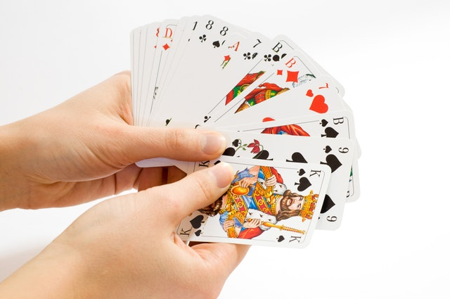
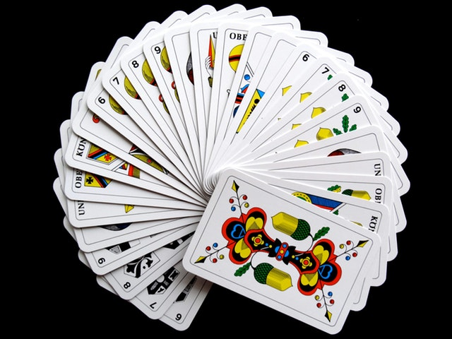
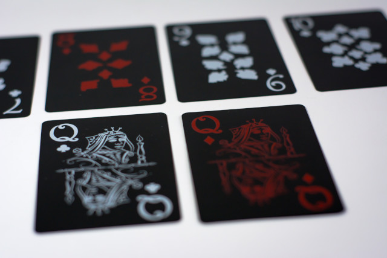
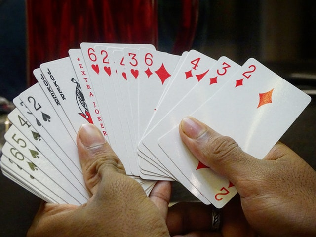

Rummy is a group of matching-card games notable for similar gameplay based on matching cards of the same
rank or sequence and same suit. The basic goal in any form of rummy is to build melds which consists of
sets, three or four of a kind of the same rank; or runs, three or more cards in sequence, of the same
suit. If a player discards a card, making a run in the discard pile, it may not be taken up without
taking all cards below the top card.
The Mexican game of Conquian is considered by games scholar David
Parlett to be ancestral to all rummy games, which itself is derived from a Chinese game called Khanhoo
and, going further back, Mahjong.The Rummy principle of drawing and discarding with a view to
melding appears in Chinese card games at least in the early 19th century, and perhaps as early as the
18th century, and is the essence of Mahjong.
Rummy games are popular in India. It is likely that Indian Rummy is an extension of gin rummy and 500
rum, which originated from the United States.
Types of Rummy

Gin Rummy and Indian Rummy are two of the most popular variations of the game. Gin Rummy is played more
in the West, whereas Indian Rummy is the one most often played on the Indian continent. It is especially
popular in South India, where it has become a part of the culture and tradition to sit around with loved
ones playing cards.
Indian Rummy is often considered a kind of mix between Gin Rummy and another variation called Rummy 500.
The rules are similar, but in Indian Rummy each player has 13 cards and must make sets and sequences of
4, 3, 3 and 3. There are also joker cards in Indian Rummy, which can be used to help player’s complete
sets.
Legality of Rummy

Rummy is classed as a game of skill in India. This is good news for players, as it means that they can
legally enjoy the game in their own homes or in public. A game of skill is considered the same as
business activity. This rule was established in 1968 and was reaffirmed by the Supreme Court in 1996
when it was again stated that rummy involves a significant degree of skill.
This legality is very important when it comes to the popularity of the game. It means that rummy has had
an easier time than many other betting games when it comes to making its way into the mainstream
culture.
The ability to play rummy online legitimately has also means that many players now use gaming sites to
play the card game.
Online Rummy
In India, rummy is often played in homes, clubs and even casinos. Yet recently, more and more players
are flocking to online sites to enjoy the game. The sites can offer games 24/7 and have community
elements whereby people can chat, share tips and learn how to play.

Online rummy sites often offer real money games. Players can set up private games with friends or can
play in public games against people they don’t know. Special promotions are often offered by the sites
to attract players. The latest technology means that some sites are trying out 3D effects in their
games.
Rummy currently rules the online gaming scene, but poker is quickly gaining traction as major players
like PokerStars enter the market. They have recently recruited Nawazuddin Siddiqui as brand ambassador
and are holding Nawaz freeroll tournaments to celebrate—a sign of the growing popularity.
According to a 2016 FICCI KPMG report, the online gaming industry is currently worth around INR 26.5
billion, and around 40% of this comes from rummy games. It’s estimated that there are around 20,000 –
30,000 people playing rummy in India at any given time.
Growing Popularity
Rummy has a lot going for it. The rules are easy to learn, yet the game itself takes years to master,
which means that it can appeal to a wide range of players. It is a game that is a challenge to learn and
fun to teach to others. It combines mathematics and decision-making skills, so it can also be
stimulating for the brain.

Smartphone adoption is also helping rummy and other games to gain popularity online. There are now
around 300 million Smartphone users in India, and that number is growing as the accessibility becomes
easier. Smartphone’s give many people access to the internet and the ability to play online games like
rummy.
Rummy is a game that has been in Indian culture for centuries and has been freely enjoyed all across the
country for decades. As people continue to play at home with their loved ones, the online sites offer
the game to a wider audience, with the ability to play whenever they feel like it. As more people access
the internet, the popularity of rummy is only set to grow.
Smartphone adoption is also helping rummy and other games to gain popularity online. There are now
around 300 million Smartphone users in India, and that number is growing as the accessibility becomes
easier. Smartphone’s give many people access to the internet and the ability to play online games like
rummy.